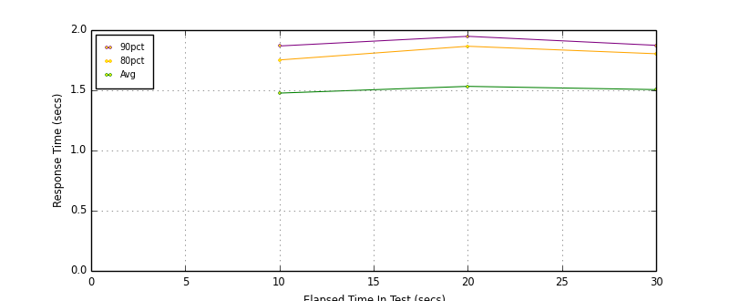
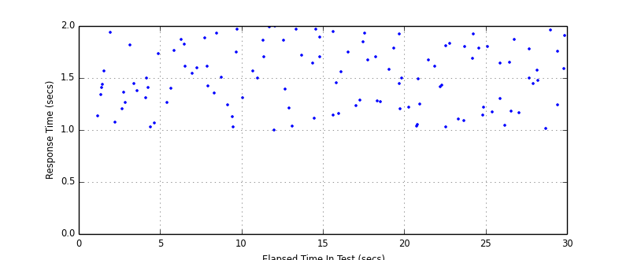
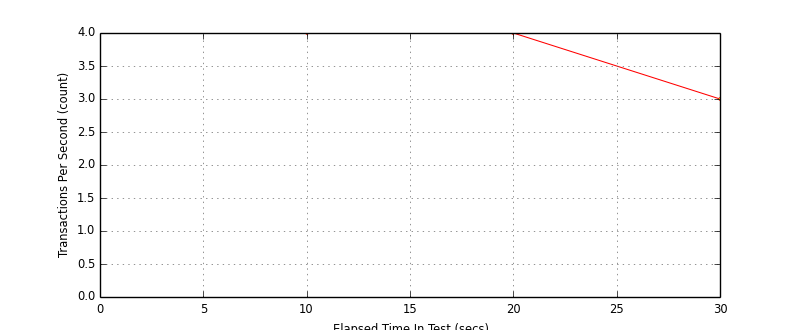
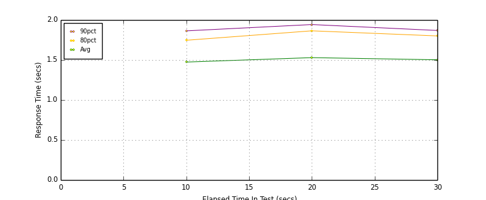
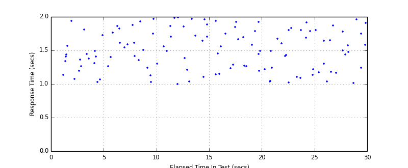

Performance Results Report
Summary
transactions: 123
errors: 0
run time: 30 secs
rampup: 0 secs
test start: 2017-04-10 23:31:48
test finish: 2017-04-10 23:32:16
time-series interval: 10 secs
workload configuration:
| group name | threads | script name |
|---|
| user_group-1 | 3 | v_user.py |
| user_group-2 | 3 | v_user.py |
All Transactions
Transaction Response Summary (secs)
| count | min | avg | 80pct | 90pct | 95pct | max | stdev |
|---|
| 123 | 1.002 | 1.505 | 1.809 | 1.922 | 1.964 | 1.999 | 0.296 |
Interval Details (secs)
| interval | count | rate | min | avg | 80pct | 90pct | 95pct | max | stdev |
|---|
| 1 | 41 | 4.10 | 1.028 | 1.477 | 1.752 | 1.868 | 1.934 | 1.973 | 0.267 |
| 2 | 41 | 4.10 | 1.002 | 1.533 | 1.866 | 1.948 | 1.973 | 1.999 | 0.324 |
| 3 | 35 | 3.50 | 1.017 | 1.506 | 1.804 | 1.874 | 1.922 | 1.964 | 0.301 |
Graphs
Response Time: 10 sec time-series

Response Time: raw data (all points)

Throughput: 5 sec time-series

Custom Timer: Example_Timer
Timer Summary (secs)
| count | min | avg | 80pct | 90pct | 95pct | max | stdev |
|---|
| 117 | 1.000 | 1.502 | 1.807 | 1.917 | 1.961 | 1.995 | 0.296 |
Interval Details (secs)
| interval | count | rate | min | avg | 80pct | 90pct | 95pct | max | stdev |
|---|
| 1 | 41 | 4.10 | 1.027 | 1.474 | 1.747 | 1.864 | 1.932 | 1.971 | 0.266 |
| 2 | 41 | 4.10 | 1.000 | 1.530 | 1.865 | 1.943 | 1.968 | 1.995 | 0.324 |
| 3 | 35 | 3.50 | 1.014 | 1.503 | 1.801 | 1.869 | 1.917 | 1.961 | 0.301 |
Graphs
Response Time: 10 sec time-series

Response Time: raw data (all points)

Throughput: 10 sec time-series